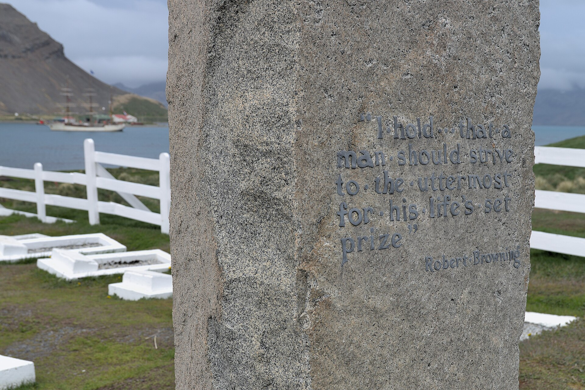

Chapter 4
A Geography of Ice and Light
Ice gripped the ship, pressing tight in a frozen vise. Ordinary navigation was over.
Frank Worsley, the Endurance’s captain, stood on the bridge with his logbook open and his pencil ready. The date was 18 January 1915. The position he recorded was 76° 34’ South, 31° 10’ West. The temperature stood at nineteen degrees below freezing. Around the vessel, the pack stretched to every horizon, a white expanse broken only by the pressure ridges where floes had collided and buckled. The sound of that collision never ceased—a low, grinding murmur that rose sometimes to a shriek when the ice found new purchase against the hull. Worsley noted the barometric pressure, the wind direction, the cloud cover. He noted what could be measured. What could not be measured was how long they might remain here, frozen into a landscape that had no fixed geography, that moved and shifted according to laws written long before any human eye had seen it.

The Weddell Sea had accepted them. Now it would decide what to do with them.
Three days earlier, the ice had shown a different face. On 15 January, the expedition’s photographer, Frank Hurley, had climbed to the crow’s nest with his camera equipment, hoping to capture a phenomenon that Worsley had noted in the morning’s navigation log: a spectacular parhelia, or sun dog, that appeared on either side of the low southern sun. The atmospheric conditions had created two bright spots of light, each showing the colors of a prism, flanking the solar disc like attendants. Hurley wrote in his diary that the effect was “indescribably beautiful,” a cascade of light across ice fields that seemed to transform the pack into crystal. The temperature had been falling for days. The ice was thickening. But in that moment, with the parhelia blazing in the polar sky, the Weddell Sea had seemed not hostile but magnificent—a theater of light that rewarded those who dared to enter it.
That beauty was real. It was also a deception. The pack ice they had entered was, as Worsley recorded, “fairly dense pack of a very obstinate character.” Its beauty masked its nature: a chaotic, pressure-driven field where floes a square mile in extent could collide, forcing slabs of ice fifty feet long and four feet thick up onto their neighbors at angles of forty-five degrees—as had happened on 31 December 1914, when the Endurance was jammed between two floes and pressure forced such slabs ten or twelve feet up a lee floe.
The Weddell Sea was not merely a body of water that froze in winter and thawed in summer.
It was a machine, vast and patient, driven by currents that circled the Antarctic continent in a slow clockwise gyre. The pack ice that formed within that gyre did not simply drift with the wind. It was pushed and compressed, pulled apart and jammed together, by forces that operated on a scale difficult for any human mind to grasp.
A single floe might measure miles across and contain millions of tons of ice. When such floes collided, the pressure at their edges could reach hundreds of pounds per square inch—enough to crush wood, to buckle steel, to snap rivets like thread.
The Endurance, for all her strength, was a wooden vessel of 348 tons, built for whaling in Arctic waters, reinforced with ironwood and oak to withstand the pressures of polar navigation. But she was built to move through ice, not to be held by it.
Shackleton had known this when he chose the Weddell Sea as his point of departure for the Imperial Trans-Antarctic Expedition. The plan was audacious in its conception: land a shore party at Vahsel Bay, located at roughly 77° 49’ South—the farthest south any ship had yet penetrated in this sector of Antarctica—then march across the continent via the South Pole to the Ross Sea on the opposite side. A supporting party would lay depots from the Ross Sea side to meet them. No one had ever attempted a continental crossing. No one had ever wintered on the Weddell Sea side of Antarctica and lived to tell of it. Shackleton knew the history. He had studied the charts. He had consulted with whalers who knew the Weddell Sea as well as anyone alive.
What those whalers had told him, and what the charts showed, was that the Weddell Sea was unpredictable. In some years, the pack opened wide, allowing ships to reach the coast at 77° South or beyond. In other years, the ice closed in at 70° or even 69°, hundreds of miles from the intended landing site. The difference was not a matter of season or temperature alone. It depended on winds, on currents, on the vast movements of ice that no human eye could see and no instrument could predict. The whalers spoke of years when the pack had been loose, and years when it had been obstinate. They could not say which kind of year this would be.
Shackleton had made his calculation. He would push south as fast as possible, using the Endurance’s engines and the experience of his crew to navigate through whatever ice they encountered. If they could reach Vahsel Bay by late January or early February, they would have time to land the shore party and begin the crossing before winter set in. If the ice stopped them short, they would retreat and try again the following season. The expedition was provisioned for two years. There was margin for error.
What Shackleton had perhaps not fully appreciated was how quickly that margin could disappear.
The Endurance had departed South Georgia on 5 December 1914, making for the Weddell Sea with a crew of twenty-eight men, sixty-nine sled dogs, and supplies sufficient to sustain a shore party for a year on the ice. By late December, the ship was deep in the pack, and the ice was showing its character. Worsley wrote in his log: “What we were encountering was fairly dense pack of a very obstinate character.” Progress was frustratingly slow—sometimes only a few miles per day, sometimes nothing at all as the ship waited for leads to open between the floes. On 22 December, those leads had appeared, and the Endurance had pushed steadily southward for two weeks, raising hopes that they might reach their destination after all.
Then the ice had closed again.
Heavy floes had held up the ship from midnight till 6 a. m. on 25 December, Christmas Day. Then they had opened a little, and the vessel made progress until 11: 30 a. m., when the leads closed again. The noon observation that day showed the best run since entering the pack: 71 miles S. 4° W. The pattern repeated itself through the first weeks of January: openings and closings, advances and stops, the ship nosing through the pack like an animal testing a trap. By mid-January, the trap had sprung.
Alexander Macklin, one of the ship’s surgeons, wrote in his diary on 20 January that the pack seemed to possess “a kind of malevolent intelligence.” It was not a scientific observation, and Macklin knew it. He was recording what many of the crew felt: that the ice was not merely an obstacle but an adversary, one that watched and waited and made decisions of its own. The feeling was irrational. The ice was ice. It followed physical laws, not intentions. But the psychological effect was real. The men were no longer sailors navigating a ship through water. They were inhabitants of a landscape that had no fixed points, no landmarks, no shore. Their world had become a white plain that moved beneath them, and they could not say where it was taking them.
The geography of the Weddell Sea was a geography of maybe. The ship’s position could be fixed by the sun and stars when the clouds permitted, by dead reckoning when they did not. But position was not destination. The Endurance was not sailing toward Vahsel Bay anymore. She was drifting, and the drift was carrying her slowly but steadily away from the coast, away from the landing site, away from the plan. Worsley would later calculate their drift rate from the navigation logs: between the start of March and 2 May, when the sun disappeared below the horizon for the winter, the ship would move 130 miles with the pack. The direction was west-northwest. The speed was increasing. Vahsel Bay was receding.
Shackleton did not share these calculations with the crew. He walked the deck each day, spoke with the men, consulted with Worsley and the ship’s master, Frank Wild, about the ice conditions. He maintained the routines that had governed the expedition since its departure: the watches, the meals, the scientific observations, the care of the dogs. The dogs remained in their kennels on deck, howling at times in chorus, fighting among themselves when given the chance. The scientists continued their work: James Wordie, the geologist, examined samples of ice and rock; Leonard Hussey, the meteorologist, recorded temperature and barometric readings; Robert Clark, the biologist, dissected whatever specimens the crew could bring aboard. The ship was a floating laboratory, a self-contained world that existed within the larger world of the ice.
But the ice was pressing in.
On the morning of 31 December 1914, the ship had her first serious encounter with what those forces could do. The log recorded that the Endurance was stopped first by floes closing around her, and then, about noon, she was jammed between two floes heading east-north-east. The pressure heeled the ship over six degrees while men got an ice-anchor onto the floe to heave astern and assist the engines running at full speed. The effort was successful. Immediately afterwards, at the spot where the Endurance had been held, slabs of ice 50 ft.
by 15 ft. and 4 ft. thick were forced ten or twelve feet up on the lee floe at an angle of 45°. The sound of ice against wood had filled the vessel—a groaning, grinding noise that rose to a shriek as the pressure increased. And then, as suddenly as it had begun, the pressure had released. The ship had righted herself. The ice had moved on.
That encounter had lasted minutes. The winter would last months.
Hurley, whose photographs would later become the visual record of the expedition, documented the ice in all its forms. He photographed the floes from the deck and from the crow’s nest, capturing their scale and their variety. Some were smooth and level, stretching like frozen lakes. Others were jumbled masses of broken ice, thrust up by pressure into ridges that rose ten or fifteen feet above the surrounding surface. The light played across these landscapes in ways that defied ordinary perception. Mirages were common: distant icebergs appeared to float above the horizon, inverted and multiplied by the refraction of light through cold air. Parhelia appeared when atmospheric conditions were right, sun dogs that followed the real sun across the sky. The aurora australis danced in the long twilight, curtains of green and pink light that shifted and swayed like silk in a breeze.
The beauty was undeniable. Hurley saw it, and so did the others. But beauty in the Antarctic was not a comfort. It was a warning.
The ice was not passive. It was not a backdrop against which human drama played out. It was an active participant, a presence that shaped every moment of existence aboard the Endurance. The ship’s routine was governed by it: when the men could go below, when they must stay on deck, when the dogs could be exercised, when scientific work could continue. The ice determined the temperature inside the vessel, the quality of the light by which they read and wrote, the sounds that accompanied their sleep. It surrounded them completely. There was no direction in which a man could look without seeing it. There was no moment in which he could forget it.
The psychological weight of that enclosure was heavier than some of the men could bear. Thomas Orde-Lees, the storekeeper and a former Royal Marine, wrote in his diary of the monotony of white that pressed upon the mind. Others spoke of the silence—not true silence, for the ice was never silent, but the absence of human sounds beyond the ship. No voices called from other vessels. No birds cried overhead, once they had moved far enough south to leave the coast behind. The only living things were the men themselves and the dogs, and the dogs were confined to their kennels, growing restless and fractious as the weeks passed.
The expedition’s doctor, James McIlroy, noted in his medical records that several men were having difficulty sleeping. The constant light during the summer months had disrupted their circadian rhythms; the endless twilight of autumn would bring its own challenges. Some were showing signs of depression, though McIlroy did not use that term. He prescribed exercise, routine, work. The ship’s routine was the best medicine, he believed. As long as the men had duties to perform, watches to stand, tasks to complete, they would not succumb to the mental effects of isolation.
Shackleton understood this instinctively. He had been south before, on Robert Falcon Scott’s Discovery expedition a decade earlier, and on his own Nimrod expedition of 1907–1909, when he had reached 88° 23’ South, just ninety-seven miles from the Pole, before turning back. He knew what the Antarctic could do to men’s minds. He had seen Scott’s party return from their winter journey to Cape Crozier, gaunt and shaken, their faces blackened by frostbite and their spirits worn to the bone. He knew that morale was a resource, as precious as coal or food, and that it had to be rationed as carefully.
So he maintained the fiction that the crossing would still happen. Not this season, perhaps, but the next. The ship would drift with the pack through the winter, and when spring came and the ice broke up, they would make for Vahsel Bay and begin the march across the continent. The plan remained in place. The goal remained clear. All they had to do was wait.
But waiting was not passive. The ice was moving, and the ship with it, and the direction of that movement was not toward the coast. Worsley tracked their drift with growing concern. The navigation logs showed a steady progression to the west and north, away from the coast, toward the open water of the Weddell Sea’s northern reaches. If the drift continued, they might find themselves released from the pack in the spring—but hundreds of miles from where they needed to be. They would have to sail back south, fight their way through the ice again, and hope that the leads would open as they had in December.
Or they might not be released at all. The ice might hold them through the summer, carrying them in its grip until they ran out of food, out of fuel, out of time.
On 22 February 1915, the Endurance drifted to her most southerly latitude: 76° 58’ South. She would go no further. The drift had carried her to within reach of the coast, but not to Vahsel Bay. The landing site was still miles away—close enough to see, perhaps, if the air had been clear, but impossible to reach across the pack that lay between. Two days later, on 24 February, Shackleton called the crew together and told them what they already knew: they would be held in the ice throughout the winter. The ship’s routine was abandoned. The crossing would not begin this season. The shore party would not land. The plan would have to wait.
The announcement was not a surprise. The men had watched the ice thicken, had felt the temperature drop, had seen the days shorten. They knew that winter was coming, and that winter in the Antarctic meant darkness, cold, and stillness. What they did not know was whether the ship would survive it.
The Endurance was designed for ice navigation. Her hull was built of oak and ironwood, with frames of greenheart and planking up to two and a half feet thick at the bow. She had been reinforced specifically for polar work, with additional bracing and a rounded shape designed to rise under pressure rather than be crushed by it. When ice pressed against her sides, the theory went, the ship would lift, riding up onto the surface of the pack rather than being squeezed between floes. It was a sound theory, tested in Arctic waters and proven effective.
But the Weddell Sea was not the Arctic. The pack here was older, harder, more compressed. The floes were larger, the pressure ridges higher, the forces greater. And the Endurance was not moving through the ice anymore. She was frozen into it, part of the pack itself, subject to the same forces that drove the gyre.
Shackleton did not share his concerns with the crew. He shared them with Worsley, with Wild, with the ship’s second officer, Thomas Crean, a veteran of Antarctic exploration who had served with Shackleton on the Nimrod and with Scott on the Terra Nova. Crean had seen the ice crush ships before. He knew what the Weddell Sea could do.
But Crean also knew Shackleton. He knew that the man possessed a will that bent circumstances to its shape, that he had brought his crew back from the edge of death on earlier expeditions, that he had walked thirty-six hours without rest to save his companions when they had run out of food on the return from their furthest south. If anyone could bring twenty-eight men through a winter in the pack, it was Shackleton.
The ice, of course, did not know this. The ice did not know anything. It simply was, and its being was indifferent to human plans, human hopes, human will.
The temperature continued to fall. On 22 February, the day the Endurance reached her most southerly latitude, the thermometer read twenty-two degrees below freezing. By the end of March, it would be thirty below. By midwinter, it would reach forty below, perhaps lower. The ship’s heating system burned coal, and coal was finite. The men wore layers of wool and fur, moved constantly to keep warm, huddled in the wardroom for meals and conversation. The dogs grew thick coats and curled together for warmth. The ice grew harder, more solid, more implacable.
Hurley photographed the ship in her frozen setting, a dark wooden shape against the white expanse. He photographed the men at work and at rest, the dogs in their kennels, the scientists with their instruments. He photographed the ice itself—its shapes, its textures, its light. He was creating a record of something that no human eye might ever see again. If the ship was crushed, if the men were lost, the negatives might survive. Someone might find them. Someone might know what had happened here.
Shackleton had brought Hurley on the expedition for this purpose. The photographer was not a scientist or a sailor. He was a chronicler, a man who saw the world through a lens and preserved it on glass plates coated with silver gelatin. His work was part of the expedition’s purpose: to document the Antarctic, to bring its images back to the world, to make the unknown visible. That work continued, even as the ship drifted, even as the plan receded, even as the ice tightened its grip.
The Weddell Sea in January and February 1915 was a place of contradictions. It was beautiful and terrifying, luminous and dark, still and in constant motion. It held the Endurance in a grip that was not hostile—not yet—but was utterly indifferent. The ship was no longer a vessel sailing toward a destination. She was a speck in a vastness that had no destinations, only movements. The ice did not care about Vahsel Bay or the South Pole or the crossing of continents. It cared only about its own processes, its own rhythms, its own ancient patterns of freezing and drifting and breaking and reforming.
The men aboard the Endurance were beginning to understand this. They were beginning to see that the geography they had learned—the fixed points on charts, the named bays and capes and glaciers—was not the geography of the ice. In the pack, there were no fixed points. There was only drift, and the drift went where it would.
Worsley continued to record their position in the log. The numbers changed, day by day, showing the slow west-northwest movement that carried them away from the coast. The numbers were precise, scientific, reliable. They showed what was happening. They did not show what would happen next.
No one knew what would happen next. The ice held them, and the ice would decide.
Shackleton stood on the bridge, watching the pack stretch to the horizon. The light was beginning to change as autumn approached, the sun lower in the sky, the shadows longer across the floes. The temperature was falling. The ice was hardening. The ship was settling into her winter position, frozen into a landscape that had no landmarks, no paths, no destinations.
The crossing would have to wait. The plan would have to change. But Shackleton did not yet know how it would change, or what form the change would take. He knew only that the ice was not finished with them, and that the months ahead would test everything he had—his leadership, his judgment, his will.
The Endurance was no longer sailing. She was being carried. Her engines were silent, her rudder useless, her course determined by forces beyond any human control. The ship was now being slowly absorbed into a living, breathing landscape; her fate was no longer in her engines but in the grip of the ice.